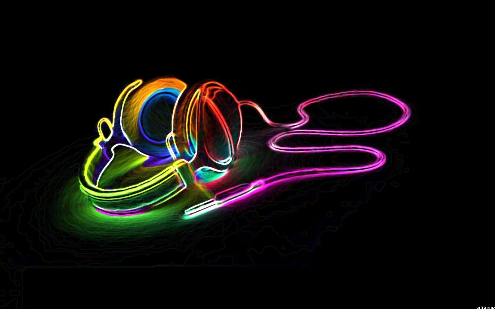

INFORMACION
La música electrónica tiene sus raíces en los experimentos del siglo XX con instrumentos electrónicos y cintas magnetofónicas. Desde entonces, ha evolucionado rápidamente, pasando por el desarrollo de sintetizadores, el surgimiento de la música pop electrónica en los años 60, la explosión de géneros como el techno y el house en las décadas de 1980 y 1990, hasta convertirse en un fenómeno global con subgéneros como el dubstep y el EDM en las últimas décadas. Esta evolución ha sido impulsada por avances tecnológicos constantes y ha dado lugar a una cultura vibrante de clubes, festivales y productores de renombre mundial.
INFORMACION
La música electrónica es un género musical que utiliza instrumentos y tecnología electrónica
para crear y manipular sonidos. En lugar de depender de instrumentos musicales tradicionales
como guitarras o pianos, la música electrónica se basa en sintetizadores, cajas de ritmos, samplers,
secuenciadores y otros dispositivos electrónicos para producir sonidos.
Lo que distingue a la música electrónica es su énfasis en la manipulación sonora y la
experimentación con texturas, ritmos y timbres. Este género abarca una amplia variedad de estilos
y subgéneros, que van desde el techno y el house hasta el trance, el drum and bass, el dubstep, entre muchos otros.
INFORMACION
En la música electrónica, los artistas utilizan una variedad de instrumentos y herramientas para crear sus composiciones. Esto incluye sintetizadores para generar y manipular sonidos, cajas de ritmos para establecer patrones rítmicos, samplers para incorporar elementos de audio pregrabados, secuenciadores para organizar las secuencias de sonido, software de producción musical para la edición y mezcla, y controladores MIDI para controlar equipos y software. Estas herramientas ofrecen a los músicos de música electrónica una amplia gama de posibilidades creativas para explorar y experimentar con sonidos, ritmos y texturas en sus obras.
